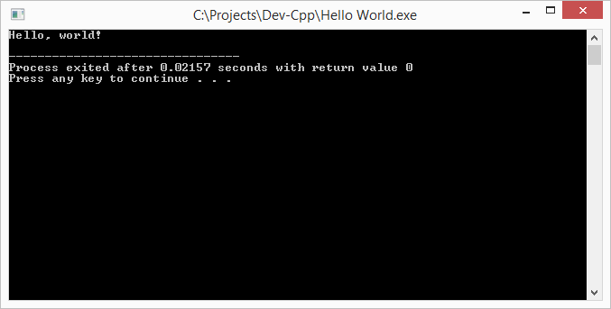

Урок C++ №2
В этом уроке вы узнаете о
выводе текста на экран или "Hello,world!"
В прошлом уроке мы разобрались со составными инструкциями и главной частью программы- main.
В этом уроке мы научимся выводить текст на экран консоли.
Консоль- то самое черное окно, предназначенное для ввода\вывода текста.
Сам по себе С++ не может выводить тексты на экран, нужно подключить библиотеку.
Библиотека - расширение для программы, позволяющее выполнять новые инструкции.
Все понятно, кроме инструкций. Вы могли догадаться, раз сущетвует составная инструкция, то она состоит из инструкций.
Инструкция - указание процессору, вашему компьютеру, выполнить действие. В С++ выделяется точкой с запятой (;) в конце.
Так, вернемся к библиотеке. Как ее подключить(0) и использовать(1) в программе? На вопрос (0) ответ прост. Подключает библиотеку инструкция
- #include<библиотека>
Заметьте, это довольно странная инструкция, потому что после неё не ставится точка с запятой!
Так как библиотека, позволяющая нам выводить на экран текст называется iostream,
нам надо написать
- #include<iostream>
А теперь вопрос (1) - как использовать библиотеку? Тоже просто. Библиотеку iostream надо использовать так:
- std::инструкция_из_библиотеки
За вывод отвечает такая штука, называемая cout (си-аут, вывод в С/С++). Она из нашей библиотеки iostream, так что использовать ее можно только через std::cout.
Чтобы вывести текст через std::cout, поставте после нее << и текст, который хотите вывести. Пусть у нас текст будет "Hello,world!"
Замечание: текст в С++ пишется в кавычках "", а цифры - без!
После любой инструкции ставьте ; !
Должно получиться так:
- #include<iostream>
-
- int main(){
- std::cout<<"Hello,world!";
- }
Если так не получилось, перечитайте все и вникните заново, обязательно получится!
Нажмите F11, чтобы скомпилировать и посмотреть программу.

Если получилось как у меня, все прошло хорошо!
P.S: поэксперементируйте с программой, попробйте убрать ; ,или } ,или int.
Поcмотрите что будет говорить компьютер при попытке скомпилировать код с ошибкой.
P.S. 2: с помощью std::cout можно вывести несколько разных строк или цифр вместе, разделяя их только << .